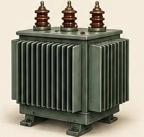

A három magyar mérnök a budapesti Ganz-gyárban dolgozott, és 1885-ben megalkották a zárt vasmagos transzformátort. A berendezés az elektromos feszültséget tudja növelni vagy csökkenteni.
Ennek köszönhetően az áramot nagy távolságra is veszteség nélkül lehetett szállítani, ezért a találmány az egész modern áramhálózat alapja lett. A „transzformátor” elnevezés is hozzájuk köthető.
← Vissza a főoldalra